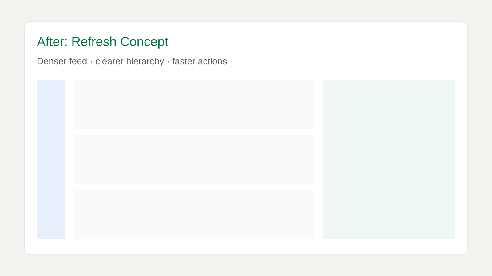
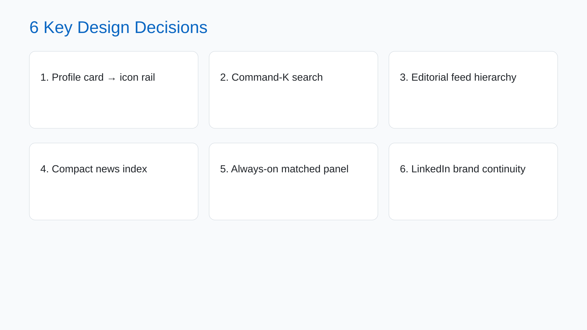
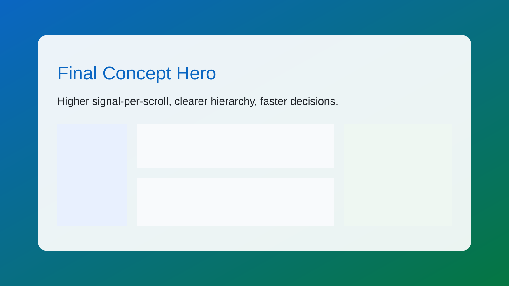

Before / After


Posts above fold
~1.5 to 4-5
~1.5 to 4-5
Content-serving width
+30 to 38%
+30 to 38%
Path to key actions
3 clicks to 1
3 clicks to 1
Quick 3-visual version focused on signal density and scan speed.


